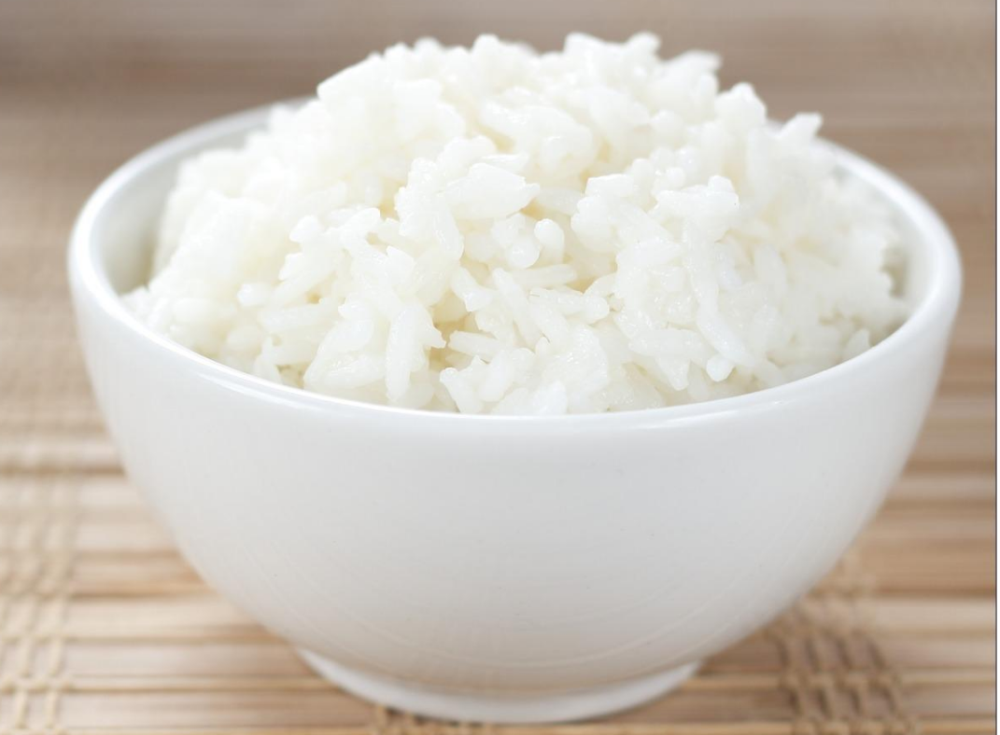

Steamed Rice

Description
This is a simple steamed rice recipe that we all can make in a rice cooker with one ingredient!
Ingredients
Steps
- Put 5 cups of Jasmine rice in the pot that comes with the rice cooker
- Rinse the starch out of the rice with water until rice water is almost clear
- Put water in the pot until water level reaches the number 5 as indicated on
the inside of the rice pot (5 because we used 5 cups but that changes based
on how many cups you are cooking)
- Dry the rice pot with a towel and place inside the rice cooker
- Close the lid on the rice cooker and flip the switch to cook
- Rice cooker will automatically cook the rice until it's ready (~20 minutes)
Back to homepage